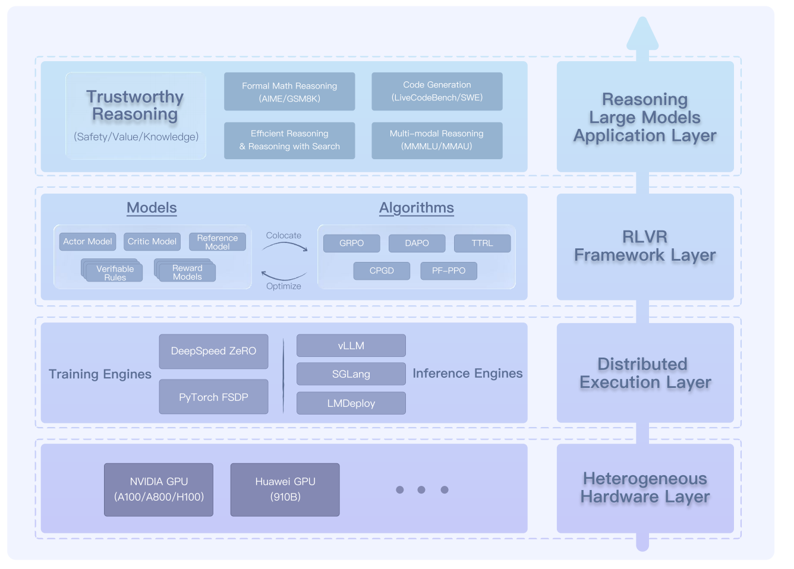

LightRFT Project Overview¶
LightRFT is a framework designed for RLHF and RLVR that enables efficient fine-tuning of large language models and vision-language models. The project is structured to support distributed training across multiple GPUs and nodes while maintaining a clean, modular architecture.
High-Level Architecture¶
{kind=link}
The LightRFT framework follows a layered architecture designed to apply reasoning large models into different domains. The system is structured in four main layers, progressing from foundational hardware infrastructure to advanced reasoning applications:
Heterogeneous Hardware Layer: The foundation supports diverse GPU architectures including NVIDIA GPUs (A100/A800/H100), Huawei GPUs, and other hardware platforms, enabling flexible deployment across different computing environments.
Distributed Execution Layer: This layer provides distributed execution capabilities through multiple training engines (DeepSpeed ZeRO, PyTorch FSDP) and high-performance inference engines (vLLM, SGLang), ensuring efficient resource utilization and scalability.
RLVR Framework Layer: At the core of the system, this layer integrates various model components—Actor Models, Critic Models, Reference Models, Verifiable Rules, and Reward Models—with advanced optimization algorithms including GRPO, DAPO, TTRL, CPGD. The models and algorithms interact through a colocate mechanism that enables seamless optimization and co-location of different components within the same computing resources.
Reasoning Large Models Application Layer: The topmost layer focuses on delivering reasoning capabilities across multiple domains, including formal math reasoning (AIME/GSM8K), code generation (LiveCodeBench/SWE), efficient reasoning with search, and multi-modal reasoning (image/video/audio/music).
The architecture operates within a distributed execution framework and an RLVR framework, orchestrating all components to deliver scalable, efficient, and trustworthy reasoning applications for large language models, vision-language models, audio-language models, and diffusion models.
Training Flowchart¶

Unlike traditional reinforcement learning tasks—such as gaming or robotics—which rely heavily on CPU-intensive environments, large language models generate data online primarily through neural network inference, producing vast token sequences. This makes decoupled system architectures with separate roles (e.g., producers and consumers) across different computing resources less suitable. In this “model-as-environment” setting, a colocate architecture integrates all stages of the training pipeline within the same computing resources. Every machine assumes the same role through data parallelism, with different phases switching via underlying engine transitions. This design enables clean scalability and ensures high utilization of computational resources. In LightRFT, we extend this concept across all models used in training, establishing our Universal Colocate Mechanism.
Multi-Mode Colocate: Multi-response generation (rollout), reward judge (assistant computation), and optimization (training) operate within a unified hardware system—like chefs, riders, and inspectors seamlessly collaborating in a single dispatch hub. This eliminates handover delays and boosts end-to-end efficiency.
Plug-and-Play Modules: Add new mechanisms—such as rewards, constraints, or teachers—without rebuilding the system. It’s like swapping LEGO wheels or steering modules on the fly, allowing swift adaptation to evolving requirements.
Efficient Mode Switching: Switch seamlessly between training, rollout, and verification scoring modes with negligible overhead, analogous to a hot pit stop in Formula 1. Combined with flexible data routing and model-sharing, this minimizes redundant resource allocation and switching overhead. The system maintains peak efficiency while reducing total training time.
Core Modules¶
Datasets Module¶
The Datasets module provides data loading and preprocessing capabilities for various training scenarios including prompts, supervised fine-tuning (SFT), and reward modeling.
Key components:
Prompts datasets for RL training (text and vision-language)
SFT datasets for supervised fine-tuning (text and vision-language)
Reward model datasets (general and safe reward models)
Audio-language dataset support
Data preprocessing and tokenization utilities
Models Module¶
The Models module defines the neural architectures and adaptations necessary for reinforcement learning with language models and vision-language models. It focuses on making minimal modifications to existing model architectures through a monkey patching approach.
Key components:
Actor network implementations (language, vision-language, audio-language)
Reward model implementations (general and safe reward models)
Loss function definitions for policy optimization
Non-invasive model modifications via monkey patching
Support for various model architectures (LLaMA, Qwen, etc.)
Custom generation methods optimized for RL training
Strategy Module¶
The Strategy module implements different approaches to distributed training, allowing the framework to scale efficiently across multiple GPUs and nodes. It provides abstractions for various parallelism techniques and optimization strategies.
Key components:
DeepSpeed integration for ZeRO-based optimization
Fully Sharded Data Parallel (FSDP) implementation
Efficient inference engines (vLLM, SGLang)
Utilities for distributed tensor operations
Checkpoint management and broadcasting
Strategy selection and configuration
Trainer Module¶
The Trainer module implements the reinforcement learning algorithms and training loops. It coordinates the interaction between models, strategies, and optimization processes.
Key components:
PPO (Proximal Policy Optimization) implementation
Experience generation and collection
Advantage estimation and return computation
Policy and value function updates
Replay buffer management (standard and vision-language)
KL divergence control
SPMD (Single Program Multiple Data) training support
Utils Module¶
The Utils module provides general-purpose utility functions that support the entire framework, including CLI argument parsing, logging, distributed sampling, and data processing.
Key components:
Command-line interface argument parsing
Distributed sampler for data loading
Logging and monitoring utilities
Data processors for multimodal inputs
Remote reward model utilities
Timer and profiling utilities
Trajectory saving for analysis
System Workflow¶
The LightRFT framework operates through a coordinated workflow:
Initialization: The system begins by setting up the distributed environment and loading configurations via the Utils module.
Data Loading: The Datasets module loads and preprocesses training data, creating dataloaders for prompts, SFT, or reward modeling.
Model Preparation: Pre-trained models are loaded and adapted for RL through strategic monkey patching in the Models module.
Strategy Selection: Based on configuration, an appropriate distributed training strategy is selected and initialized.
Training Loop: The Trainer module drives the training process, generating experiences, computing rewards, and updating the policy.
Inference Optimization: During generation, specialized inference engines (vLLM/SGLang) may be employed for efficiency.
Checkpointing and Evaluation: The system regularly saves model states and evaluates performance.
Extension Points¶
LightRFT is designed with extensibility in mind:
New Datasets: Additional dataset types can be added by extending the base dataset classes in the Datasets module.
New Models: Support for additional model architectures can be added through the monkey patch system or by creating new actor/reward model classes.
Alternative Strategies: New distributed training approaches can be implemented by extending the strategy base class.
Custom RL Algorithms: Different reinforcement learning algorithms can be implemented as new trainer classes.
Inference Optimization: Additional inference engines can be integrated through the strategy module.
Custom Utilities: New utility functions and processors can be added to support specific use cases.
This modular design allows LightRFT to adapt to new research directions, model architectures, and hardware configurations while maintaining a consistent interface for users.